PSI / POSTECH
The PSI
photo archive
Days spent building, testing and being together. Thirteen photographs from five moments in the club archive.
Launch day
A day at the field: the people, the assembled vehicle and the launch rail.
5 photographs / PSIWatch the field and onboard films{kind=link}
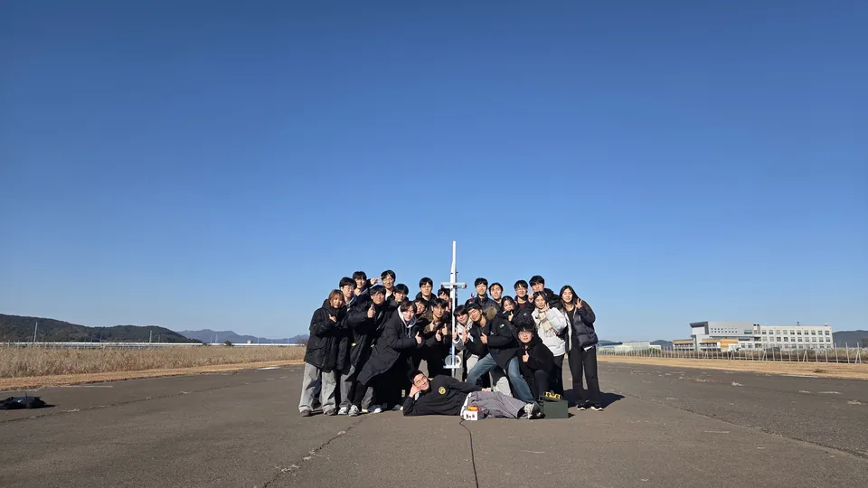
{kind=link}
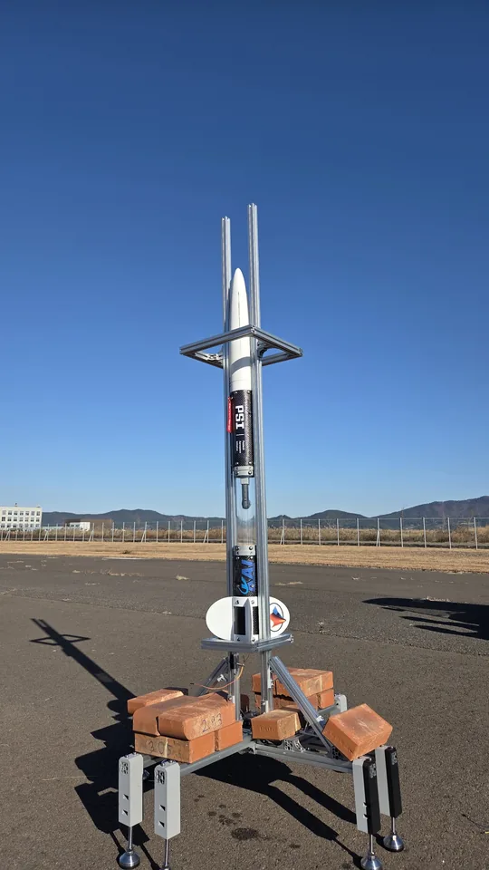
{kind=link}
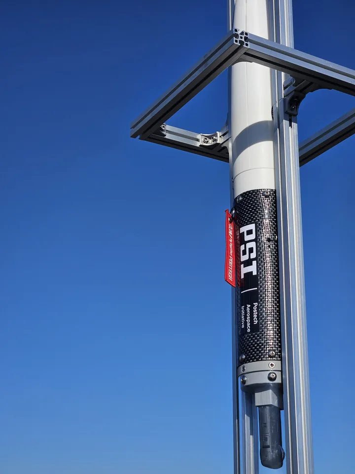
{kind=link}
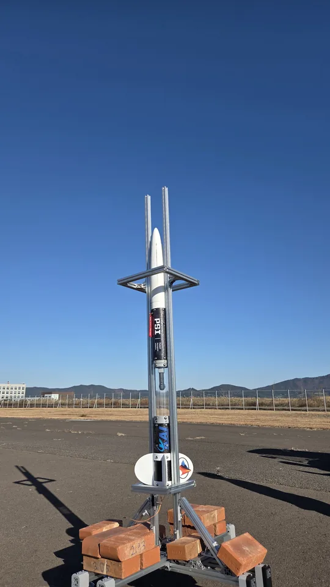
{kind=link}
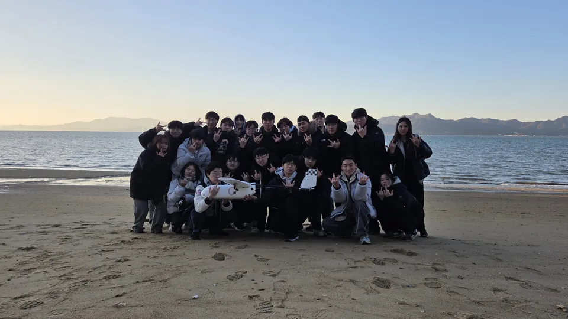
Together with the rocket
One moment with the vehicle and its parachute.
1 photograph / PSI{kind=link}
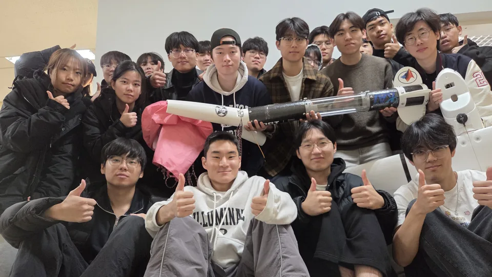
NURA: building and field preparation
Hardware checks and preparation at the field. Month attributed from the activity archive; exact capture dates are unverified.
4 photographs / PSI{kind=link}
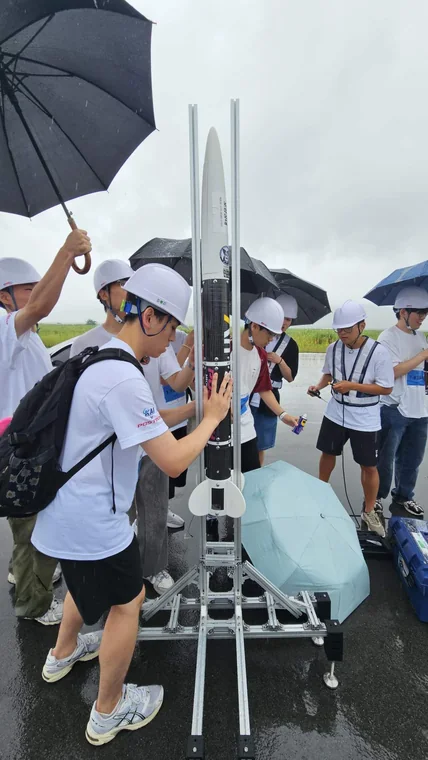
{kind=link}
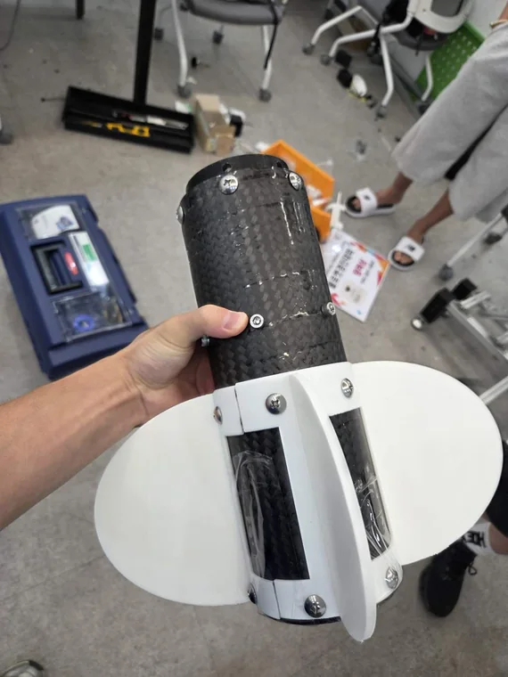
{kind=link}
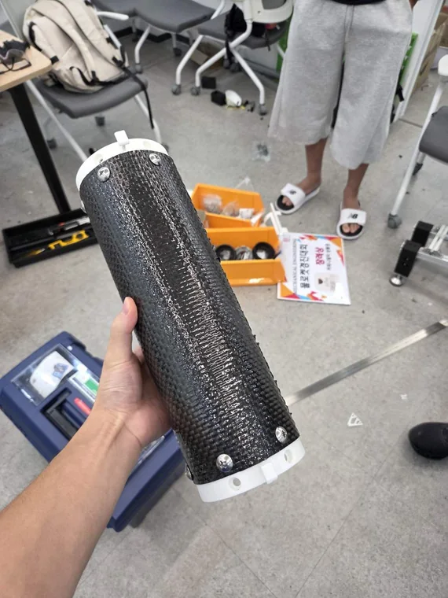
{kind=link}
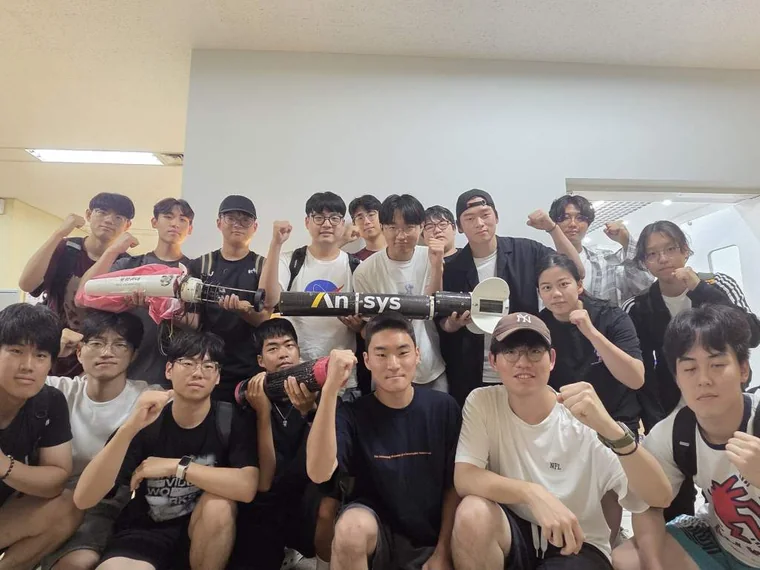
NURA rocket conference
The event dates are recorded on the conference banner.
1 photograph / PSI{kind=link}
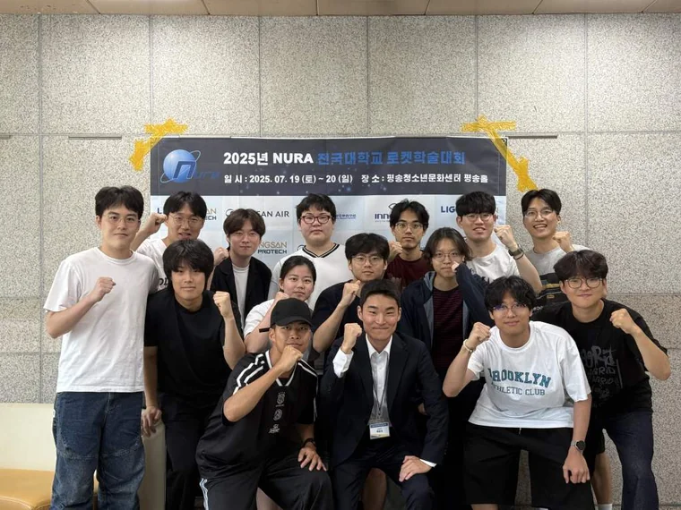
Test preparation, together
Assembly, inspection and the team around the apparatus. These are preparation photographs, not firing results; the month follows the activity archive.
2 photographs / PSI{kind=link}
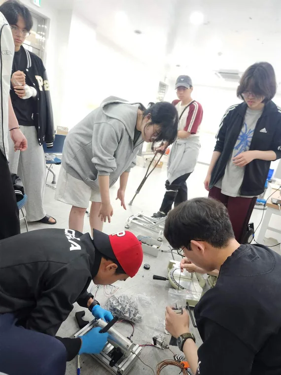
{kind=link}
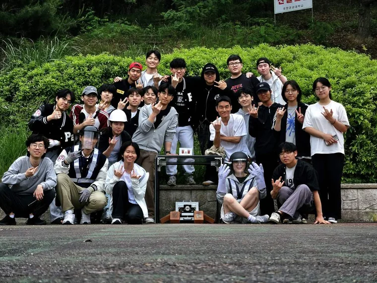
Photographs from the PSI archive. Some images are archive preview derivatives; this gallery preserves their available resolution.